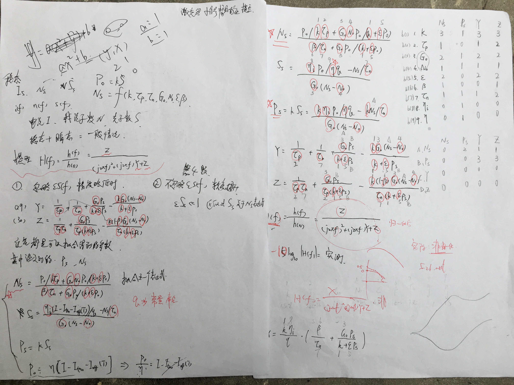

结束了为期4天4夜4小时的研究生数学建模比赛，现在回想起来，整个过程还是比较顺利的。
首先在公布赛题的前天晚上，我跟黄强文在图书馆写好了论文的主题框架，以及目录的格式等等，避免在行文过程中遇到格式问题的尴尬，严格按照组委会的要求进行格式的设置，进一步加深了对于word文字格样式的理解。然后我们去看了电影《猩球崛起3》，没什么意思。
第二天一早（周六），黄强文赶到图书馆占座，我9点多姗姗来迟，到了图书馆就开始研究选题，看了一圈，题目都比较困难，其中A,C,E都是有关图论的问题，黄强文虽然对算法比较熟悉，称得上得心应手，但毕竟这需要一个团队来解决，光靠他一个人很难把这么复杂的问题给分析出来。我看到了华为公司命题的B题，乍一看是一条激光器的题目，看到了附录3以为需要很深厚的专业知识，所以基本敲定了做这题，我最扎实的就是通信方面的基础，只要提及，就能想起。然后我看到了有关视频摘要的D题，这不就是我在计算机学院看了一暑假的“视频摘要”吗，动态提取，图像识别。第一问我觉得可以直接做出来了。我立即联系了学长，几经周折，告诉我他们做的知识调用了OpenCV的一个封装好的函数，而我们建模的目的是自己建立模型来提取人像，所以第一问虽然能轻易做出来，但是不符合要求，因为对于算法编程这块有点困难。反正我清楚这条题目算法的灵魂在于“隔帧比对”，提取出动态的像素，接着就是图像处理相关操作，将动态的人跟背景分离。看到这里，D题放弃掉，我着眼于B题，发现其实B题比想象的容易。仔细阅读题目就可以发现，激光器VCSEL激光器的L-I曲线模型已经给我们了，我们只需要将其中8个参数给求出来，根据所提供的一组数据。该怎么求？中午吃完饭，何鸣跟黄强文在研究如何将模型的参数求出来，我睡了一觉，越睡越热，实在受不了了，加入了他们的讨论，此时他们已经试验了Matlab里自带的nlinfit函数了，并且由简单的例子拓展到了解决拟合8个参数的思路，现在只需要将函数提供出来就可以进行拟合，一下午我们就在纠结，我们拟合出来的参数怎么跟它给的初值相差这么大，会不会是错的？黄强文加了比赛讨论群，从中获得了官方比赛的解惑论坛，里面有关于B题的讨论，其中每题都有一个专家来进行解答。一下午差不多拟合了几组数据出来，并且也对于数据点进行了描绘比对，用得到的参数来进行模型的绘制，进展还算顺利。从论坛上还得到了两个个重要信息，1、那就是V-I经验模型的隐藏求解，第一第二问的提升关键也许就在于V是关于I的函数，还是V是关于I,T的函数，这一点很重要，所幸在官方提供的英文文献里，这些东西都提到了，都有相关影子。2、关于P0求出来左右两边都有P0，那么关于四次方根的求解无疑是非常麻烦的，但是我找到了专家关于这个问题的描述，他的意思是实际应用中可以对这个模型进行简化，从而避免四次方根的求解，我灵光一现，用一个固定的参数，来代替P0，带入到式子中去拟合，把这个参数也作为模型的参数不就行了吗，实验结果还是比较好的，有效避免了四次方根的求解。晚上吃完晚饭，我们觉得图书馆太热，在宿舍继续干，基本解决了B题的第一题的a,b两问的思路，第一天10点多结束，没写论文，明天开始写。
第二天一早（周日），大概九点左右，我们继续在我宿舍干了起来。我着手写论文，何鸣继续写Matlab程序，跑数据，黄强文继续搜寻有价值信息，并且思考正确的曲线应该是什么形状的？第一题a问是要求你根据所求出来的模型参数，绘制该模型在不同温度下的L-I曲线，这还是比较方便的。b问从论坛上看到专家对于这个问题的解释，是取一个临界温度，使得该温度下的L-I曲线的极大值点达不到2mW，如何得到这个温度值？我们采用了二分法，并且在第六次的时候找到了精确到小数点后两位的一个温度值。第二问，模型的优化，我们提出的改进就是经验V-I模型，考虑到温度对V的影响，本来还想考虑四次方根对其求解的影响，但是无奈曲线实在是不好看，有点感觉不符合实际，所以pass掉了这个方案。我写文章写的很懵逼，公式很多，我都一一敲了出来，工作量还是比较大的。我挺佩服何鸣的，他能过清楚的知道自己跑出来的数据保存在什么地方，并且能够很快调出这些数据来进行图形的绘制，这一点是我做不到的。他的记忆力确实好。论文缝缝补补，总算是在晚上11点半左右将第一二两个问题写了出来。期间不知道他们的进度如何，反正我扑在了论文上面，我只知道何鸣不停的修改曲线，以期望得到“最正确“的结果，黄强文拿别人的图跟我们的比对，结合英文论文分析，到底应该曲线是什么样子的。论文的第一二题写完了，觉得差不多，到达我们能力的极限了。
第三天一早（周一），他们决定继续往下做，反正还有两天半的时间，为什么不往下试试呢，说实话，我当时看过附录2，实在太吓人，不过他们坚持要往下做，我只能耐着性子看下去了。当我看到这个带宽模型时，我仔细阅读了一遍，表面上看上去参数大概十几个，表达式一大堆。但是当我一点点读完后发现了有趣的东西，这么巨量的篇幅，原来是把这个模型详细的推导过程给了出来，大部分都是可以省略的推导过程，也就是无效信息，因此我抽丝剥茧，理清了整个模型的脉络，分为两步，第一步：系统的响应必然分为两部分，稳态响应与瞬时响应，表达式都给了出来。第二步：根据系统的响应是稳态加瞬态，根据幅频特性表达式h(f)，根据给出的表达式，将其中的参数标识出来，这是最关键的一步，对于响应系统的理解。应该是从响应表达式出发，不管是不是归一化的响应，最后都会归结为系统关于几个参数的量，归一化方程是2个参数，Y，Z其中Y的表达式是给出来的，里面包含了稳态的N以及稳态的P，因此一层层回溯，找到最初定义的地方，再将方程写出来，这个模型就可以写成数学表达式，公式十分复杂，你中有我，但是原理很容易，除了频率f之外所有的参数全都是可以拟合出来的，没错，就根据一组S21实测曲线进行拟合，Matlab确实比较强大。当然何鸣对于matlab的使用也使我叹为观止，上午10点半写给他的表达式，出去开了个会，下午4点，他就已经把表达式输入完毕了，matlab并不像word编辑公式，或者其他语言，它输入公式是很复杂的，需要一个个迭代，并没有换元这么一说，大概三页word的公式，看起来头皮发麻，这么一长串的公式，何鸣竟然只出了两个错误，”b3输成b5，乘号变成加号“，不出错是不可能，难得的是这么精准快速的定位到错误，可以看出他写出来的matlab程序一目了然，条理清晰，这又是值得我佩服的地方。然后五点不到，就拟合出了与S21实测数据非常吻合的曲线，着实厉害。晚上吃过晚饭，我着手将第三题的论文写出来，因为思路是我发掘的，所以写这部分还是比较轻松的，没有写过多无聊的公式，留下来的全是必要的经典。晚上11点半结束战斗，第三问基本能够解决，看英文文献还是比较重要的，在结束前，我们讨论了关于第四题的思路，总结下来就一点，看文献，搜索关键词为“激光器带宽模型”。

第四天一早（周二），今天必须把所有题目解决，论文写好，代码整理好，绝不拖到明天的截止时间。上午几乎没什么进展，就是看组委会提供的文献，并且搜索相关的激光器带宽模型的文献，我也没什么头绪，可能是运气比较好，在读一篇中文文献时，“量子级联激光器的一种新的等效电路模型_张鹏程”，其中的参数指向了一篇英文文献，“A simplified analysis of direct intensity modulationof quantum cascade laser”这篇英文文献成为了我们解决第四题的关键，虽然读不懂，但还是硬着头皮用英文翻译软件将大致意思读懂了，就是一个激光器的量子级联模型，带宽可以达到很宽，参数，模型，图像等等都已经描述在英文文献里了，我看完这篇文献后，灵光一现，这不就是跟附录2差不多的思路吗，不过模型不同而已，都是求系统的响应，亦即对于稳态跟瞬态的求解，万变不离其宗，想明白这一点，我就开始搜寻关于这个模型的最终表达，然后回推过去，查看其它的参数如何求得，原来简化后的速率方程推到得到的IM of QCL还是挺好理解的，不过参数不同而已，最终表达的还是系统的响应，心里有数，手上不慌，最后我把方程给了何鸣，何鸣根据方程，将文献里给的参数，绘制了一个该模型的带宽图形，也算是对这个问题有个交代吧，ok，晚上1：40解决所有战斗，论文md5提交，完工。
第五天一早（周三），我坐在宿舍，外面下着大雨，我等着三位一夜未归的舍友，当我提起笔时，室友陆续回来，现在在酣睡，总结外面这几天的征战，有几点值得怀念：1、合作共赢，何鸣将其自身优势发挥的淋漓尽致，matlab能实现论文所需要所有的图形。我逻辑思维清晰，专业基础扎实，能够从蛛丝马迹抽丝剥茧，并且运气比较好，搜集情报能力一般，但是会及时记录，以备不时之需，事实证明这是非常好的习惯。黄强文动手能力强，搜集情报能力极强，从各种途径论证我们所求模型的正确性，从上图时间点可以看出，我发出的英文文献，47分说给我搞下来，52分群里就有了该文献，当时我们并不在一起，他应该在上课，可见对于队友提出的需求反映是十分迅速的，达到了非常可贵的“敏捷”。2、资源齐备，数学建模，首要是选题，其次是读懂题目，我在第三问时清晰的思路，独特的理解问题的方式，求解问题的思路无疑让团队少走了很多弯路，以及从论坛上搜集的诸多情报，能够在题意理解不清时，防止队伍跑偏。何鸣对于模型的理解，对于模型的求解，数据的存储，提取等方面卓越的能力，让我们不管是换模型还是写论文都能迅速转型，很多时候我说一句话，他就能明白我接下来要表达的意思，并且立即提出，这个问题没问题，i can do it。黄强文搜集问题的能力，为团队提供的资源，通过水群，询问别人，为团队引来了活水，思路永不止步。3、我们是一个团队，每个人发挥其独特优势，将会所向披靡。->“给我搞下来”->“拿去”。->“尝试xxx模型，把xxx参数给我”->“没问题，数据接好”。数学建模告一段落，我们将会记住这段宝贵经历，一起并肩战斗，过程很重要，期待有个好的结果。